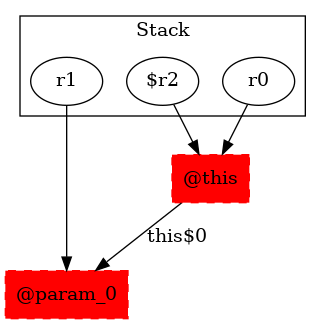

-1 : r0 := @this: TestMidsem$NodeMidesemA
-1 : r1 := @parameter0: testcase.TestMidsem
-1 : $r2 = (testcase.TestMidsem$NodeMidesemA) r0
15 : $r2.|testcase.TestMidsem$NodeMidesemA: testcase.TestMidsem this$0| = r1 ->class soot.jimple.internal.JAssignStmt {Left: class soot.jimple.internal.JInstanceFieldRef, Right: class soot.jimple.internal.JimpleLocal}
15 : specialinvoke r0.|java.lang.Object: void |init|()|()
15 : return
